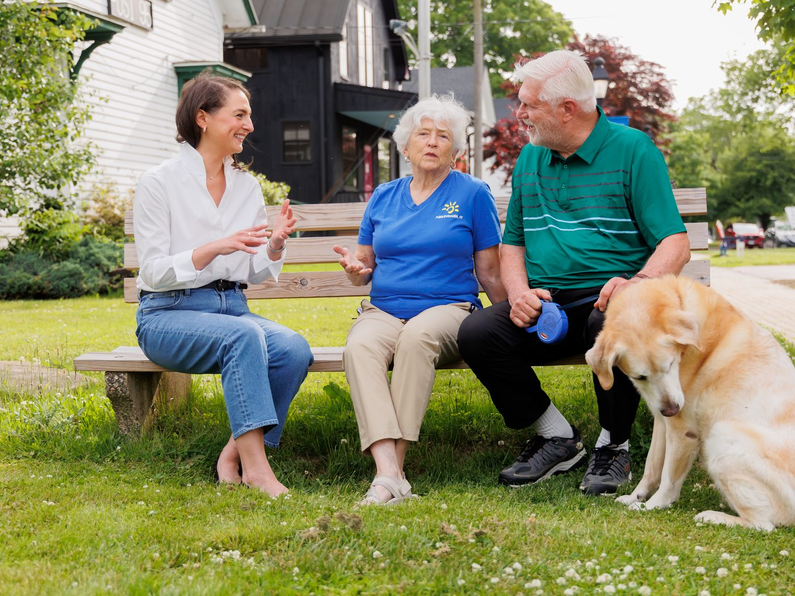

I love the work I do. Throughout my career, I've had the opportunity to improve people's lives by strengthening libraries, advancing public policy, and bringing people together to solve difficult problems. I never imagined that one day I'd be asking my neighbors to send me to Hartford.
But I was raised to believe that citizenship means more than voting. It means contributing to your community. And when you're in a position to make a difference, you have a responsibility to step forward.
I've seen firsthand that good government is still possible when people are willing to listen, build consensus, and stay focused on solving problems instead of scoring political points.
I'm running because I believe Connecticut's values are worth protecting. Respect. Opportunity. Strong public schools. Responsible government. Trust in facts and expertise. Equal rights under the law. These values deserve leaders who will defend them.
We shouldn't force homeowners to shoulder costs that should be shared by the entire state. When the state's share of education funding fails to keep pace, towns are left to raise property taxes, cut school programs, or reduce local services.
Connecticut's Education Cost Sharing formula hasn't been updated since 2013. I'll work to modernize it so it reflects today's costs, strengthens our public schools, and provides meaningful property tax relief for local families.
We need affordable homes for our middle class: our teachers, firefighters, librarians, nurses, and young families just starting out. Yet housing stock is low and prices are sky-high.
We should make it easier and faster to build smaller, more affordable homes without sacrificing safety or local character. Other New England states are cutting red tape with pre-approved home designs. Connecticut should pursue practical solutions like these.
Connecticut families pay some of the highest electric bills in the country, while utility companies keep posting massive profits and asking working families to pay more.
We need an energy policy that puts ratepayers first: stronger oversight, real accountability for utility companies, and long-term investment in a diverse, reliable energy supply. Affordable energy isn't a luxury. It's essential.
Technology, AI, and social media are changing our society faster than our laws can keep up, raising real concerns about children's mental health, privacy, and misinformation.
I'm not anti-technology and I'm not interested in fearmongering. But government has a responsibility to set reasonable guardrails so that technology serves people, not the other way around.
Some things can be rebuilt. Others, like our green places, are gone forever once they're gone. Our farms, forests, lakes, and open spaces are part of what makes our communities wonderful places to live.
We can welcome new homes, support local businesses, and grow our economy without losing the landscapes that define our region. Growth should be thoughtful and well planned, not driven by short-term interests at the expense of future generations.
Strong families are the foundation of strong communities. Connecticut should be a place where people can afford to raise children, where every child has access to an excellent public education, and where families have the freedom to make their own personal healthcare decisions.
Too many families are squeezed by the rising cost of child care. Government should support families, not make their lives harder: protecting reproductive freedom, investing in affordable, high-quality child care, and strengthening our public schools. When we invest in families, we invest in Connecticut’s future.
Elected office should be public service, not a lifetime job or an opportunity for personal profit. I support reasonable term limits, banning elected officials from trading individual stocks while in office, and requiring legislators to hold regular public town halls in the communities they represent.
People deserve representatives who are accessible, accountable, and focused on the public interest — and rules that make sure they stay that way.

The Choice
Steve Weir's RecordvsEllen's New Direction
Steve Weir has built a clear voting record in Hartford. Ellen brings a different set of priorities to the 55th, issue by issue.
Scored just 52% on the Connecticut Education Association’s legislative scorecard. In any classroom, that’s an F.
Voted no on the early-childhood care and education act, one of only ten votes against in the whole chamber; his own caucus voted 36–10 for it (HB-5003, 2025).
Voted no on supporting teachers and paraeducators (HB-6880, 2023).
A New Direction
Ellen on Education
Every child deserves an excellent public education regardless of ZIP code, and the people doing that work, our teachers and paraeducators, deserve a legislature that has their back.
I’m proud to be endorsed by the Connecticut Education Association, the state’s largest organization advocating for teachers and students. In Hartford, I’ll fight for the resources our schools need, from early childhood through graduation, so every child has the chance to reach their full potential.
Four years in Hartford while the state’s education funding formula stayed frozen at 2013 costs, leaving local property taxpayers to make up the difference.
Voted no on school resources for our public schools, even though most of his own caucus voted yes (SB-5, 2024).
Voted the Republican position on 38 of 40 contested education votes, the votes that decide what the state pays and what your town must.
A New Direction
Ellen on Property Taxes
We shouldn’t force homeowners to shoulder costs that should be shared by the entire state. When Hartford underfunds our schools, towns are left with two options: cut programs or raise property taxes. For a decade, they’ve had to do both.
I’ll work to modernize the Education Cost Sharing formula so it reflects today’s costs and delivers real property tax relief for the families of Andover, Bolton, Glastonbury, Hebron, and Marlborough.
Voted no on every contested reproductive-rights bill in four years.
Voted no on protecting access to reproductive health care, even though a majority of his own Republican caucus voted yes (HB-7213, 2025).
Voted no on reproductive health care for students at public colleges (SB-1108, 2023) and on protections for equitable access to health care (SB-7, 2025).
A New Direction
Ellen on Women’s Health
Decisions about reproductive health care belong to women and their doctors, not to politicians. Connecticut has long protected that freedom, and I’ll defend it without hesitation.
Rights on paper aren’t enough; access matters too. That means maternal care, contraception, and reproductive health services available in every part of the state. When bills protecting that access come to the floor, I’ll vote yes, and you won’t have to guess.
Sits on the board of the Connecticut Apartment Association, a landlord trade group, and calls himself “a service provider to apartments.”
Helped kill a bipartisan tenant-safety bill on the session's final night by threatening to run out the clock (SB-274, 2026). It had already passed the Senate after thousands of tenants were displaced from unsafe apartments in Rocky Hill.
Voted no on every contested housing bill for four years, including converting empty commercial buildings into homes (SB-1444, 2025) and accessory apartments even most Republicans backed (HB-5288, 2026).
A New Direction
Ellen on Housing
We need affordable homes for our middle class: our teachers, firefighters, librarians, nurses, and young families just starting out. The answer is practical: make it easier and faster to build smaller, more affordable homes without sacrificing safety or local character.
Practical solutions only work if your representative votes for them. Hartford has taken up bill after bill to make homes easier to build, and our representative voted no every time. When those bills come to the floor, I'll vote yes.
Voted the party line against essentially every climate and clean-energy bill.
Voted no on a zero-carbon target (HB-6397, 2023).
Voted no on solar projects and community solar (HB-5232, 2024; HB-7087, 2025).
Voted no on protecting well-water quality (HB-7248, 2025).
A New Direction
Ellen on the Environment
Some things can be rebuilt. Our farms, forests, lakes, and open spaces are not among them. Once they're gone, they're gone forever.
We can welcome new homes and grow our economy without losing the landscapes that define our region. When measures to protect clean water, open space, and clean air come before the legislature, I'll vote for them. That's a real difference, and one our grandchildren will live with.
Voted no on new renewable generation (HB-5340, 2026).
Voted no on community solar (HB-7087, 2025).
On siting renewable energy, voted to the right of his own caucus, Republicans favored it 42–12 (HB-5361, 2024).
A New Direction
Ellen on Energy Costs
Connecticut families pay some of the highest electric bills in the country while utility companies post massive profits. We need an energy policy that puts ratepayers first: stronger oversight, real accountability, and long-term investment in a diverse, reliable energy supply.
More homegrown energy means more supply, more competition, and less exposure to price spikes. You can't lower electric bills while voting against every effort to produce more energy here in Connecticut. I'll vote for accountability and for supply. We need both.
Ranking Member of the Labor Committee, yet voted against every major worker-protection bill of his tenure.
Voted no on expanding paid sick days (HB-5005, 2024).
Voted no on Paid Family & Medical Leave improvements, even after eleven Republicans crossed over (SB-222, 2024).
Voted no on limiting Amazon-style warehouse productivity quotas (HB-6907, 2025).
A New Direction
Ellen on Workers
Work should pay enough to live on, and no one should have to choose between a paycheck and caring for a sick child or an aging parent. Paid sick days, family leave, and basic fairness on the job aren't radical ideas. They're how we keep the people who keep our communities running.
I've spent my career in libraries and nonprofits, places that run on people who work hard for modest pay because they believe in what they do. In Hartford, I'll stand with the workers of eastern Connecticut, because an economy only works when it works for the people doing the work.
Voted the Republican party line 96% of the time on contested bills, 95–98% every year.
Just three genuine bipartisan crossover votes in 1,293 roll calls.
Voted to the right of his own Republican caucus on 95 separate votes.
A New Direction
Ellen's Independent Approach
I've spent my career bringing people together to solve problems, helping pass bipartisan legislation through coalition-building and consensus. The work I'm proudest of passed because people who didn't agree on everything were willing to listen.
That's how I'll represent the 55th: not as a reliable vote for one party, but as a voice for five towns. When a good idea comes from the other side of the aisle, I'll vote for it. And when my own party gets something wrong, I'll say so. You deserve a representative who answers to you, not to a caucus.
Voted no on ending child marriage in Connecticut, the Senate passed it unanimously (HB-6569, 2023).
Voted no on swimming-pool barriers to prevent child drownings (HB-5169, 2024).
Voted no on nursing-home transparency, Republicans favored it 42–10 (HB-6678, 2023).
A New Direction
Ellen on Common Sense
Some votes aren't about party or ideology at all. Protecting children. Keeping seniors safe. Letting the public see how its institutions are run. Those are common sense, and they should be the easiest votes a legislator ever takes.
When bills like these reach my desk, I won't look for a political angle. I'll ask one question: does this make life better and safer for the people of the 55th District? If the answer is yes, so is my vote.
Voted no on implementing early voting after Connecticut voters approved it by constitutional amendment (HB-5004, 2023).
Voted no on letting voters decide on no-excuse absentee voting (HJ-1, 2023).
Voted no on absentee voting reforms (HB-5001, 2026).
A New Direction
Ellen on the Right to Vote
When Connecticut voters amended our constitution to allow early voting, they gave the legislature a job: carry it out. That's the basic promise of self-government. When the people decide, their representatives follow through.
I trust the voters of this district. I'll work to make voting secure, accessible, and convenient for every eligible voter, and I will never vote to make participating harder.
Meet Ellen
A career bringing people together.
Ellen Paul has spent her career bringing people together to solve problems and strengthen the communities they call home. A librarian, nonprofit executive, and former staff member to Congressman Joe Courtney, she has worked at every level of government, building coalitions, navigating complex public policy, and delivering results.
As Executive Director of the Connecticut Library Consortium, she works with more than 1,000 libraries across the state to improve public services, reduce costs for taxpayers, and strengthen access to information. Her work with the General Assembly has advanced landmark, bipartisan legislation to protect library access to digital books and safeguard intellectual freedom.
Ellen grew up in Mansfield and is a lifelong resident of eastern Connecticut. She now lives in Glastonbury with her husband, Steve, and their two daughters.
Get Involved
This campaign runs on neighbors.
Knock doors, host a yard sign, or help spread the word. Every bit moves us closer. Join us.
Sign up to volunteer or just stay in touch. We'll keep you posted.
Thanks, you're on the list! We'll be in touch soon.
We've ordered 300 signs going out in August, in two versions: one with Ellen's picture and one with just the logo. Let us know if you'd like one!
Thanks, your sign request is in! We'll be distributing signs in August.
A quick note before you look
This is a working draft of Ellen's new campaign site, the single-page, long-scroll version we're trying out.
Some wording is placeholder or best-guess and still needs Ellen's sign-off: the tagline and a few button labels.
Ellen's side of the “The Choice” comparison is drafted by Scott as a starting point, borrowing from her issue statements. Every word is hers to edit or replace.
Steve Weir's records come straight from official Connecticut roll-call votes.
Nothing here is final. It's a starting point for discussion.